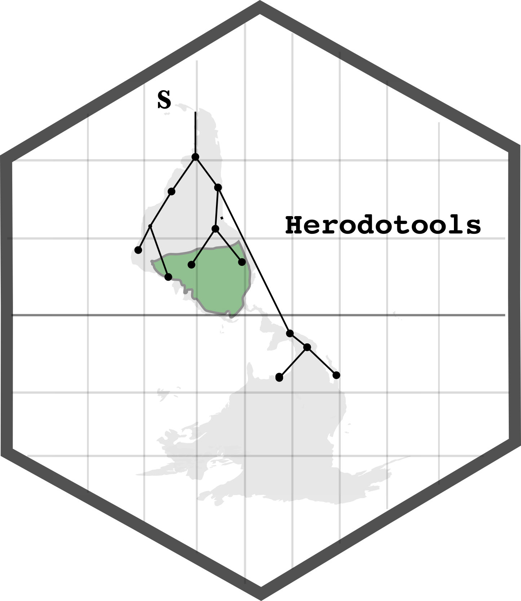

General overview
Herodotools is an R package that allows to perform analysis to investigate the effects of historical processes, specifically diversification and historical dispersal, in determine the biodiversity structure of assemblages and biogeographical regions. This is achieved by integrating tools of macroevolutionary dynamics (e.g. ancestral area reconstruction, trait reconstruction) with metrics commonly used in community phylogenetics, and also by providing new metrics that integrate the macroevolutionary dynamics in assemblage or biogeographical scales. Some of the functions presented in Herodotools package has been used in previous studies to understand, for example, imprints of historical processes in present day patterns of diversity, macroecological patterns and the interplay effects of ecological variation and macroevolutionary dynamics
In general, Herodotools was designed to work as a
unified platform of analysis of historical biogeography by integrating
methods from Macroecology, Macroevolution and Community
Phylogenetics.
Download
To install the development version of this package the user must type:
# install.packages("devtools")
devtools::install_github("GabrielNakamura/Herodotools", ref = "main")Example
For more details and examples please visit Herodotools web page